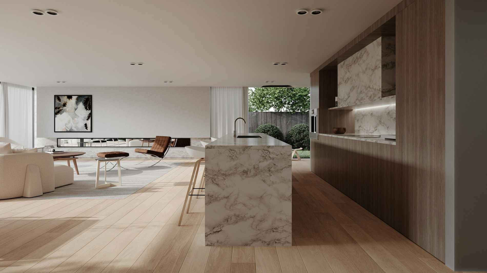
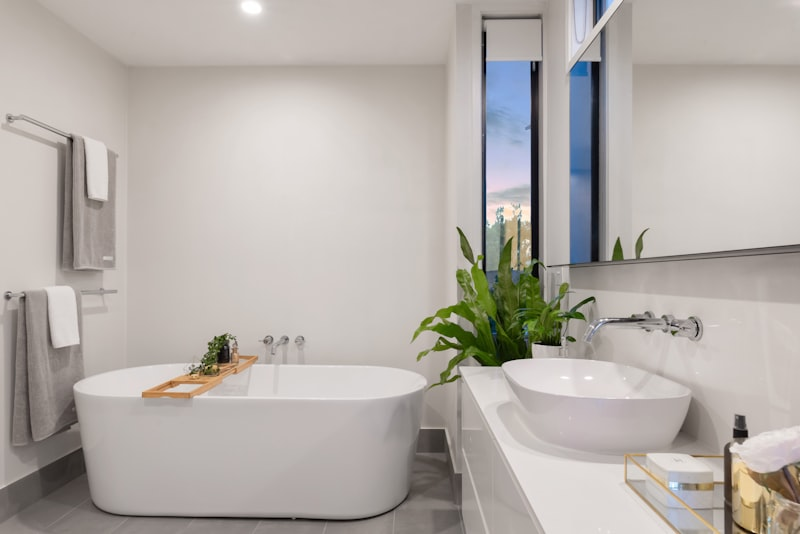
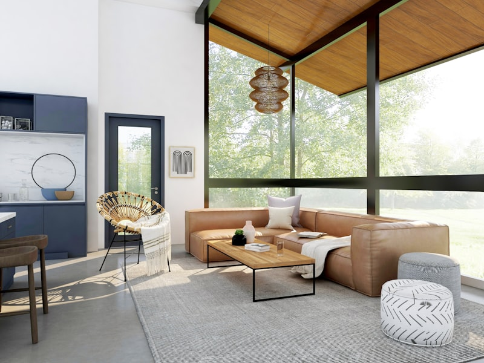
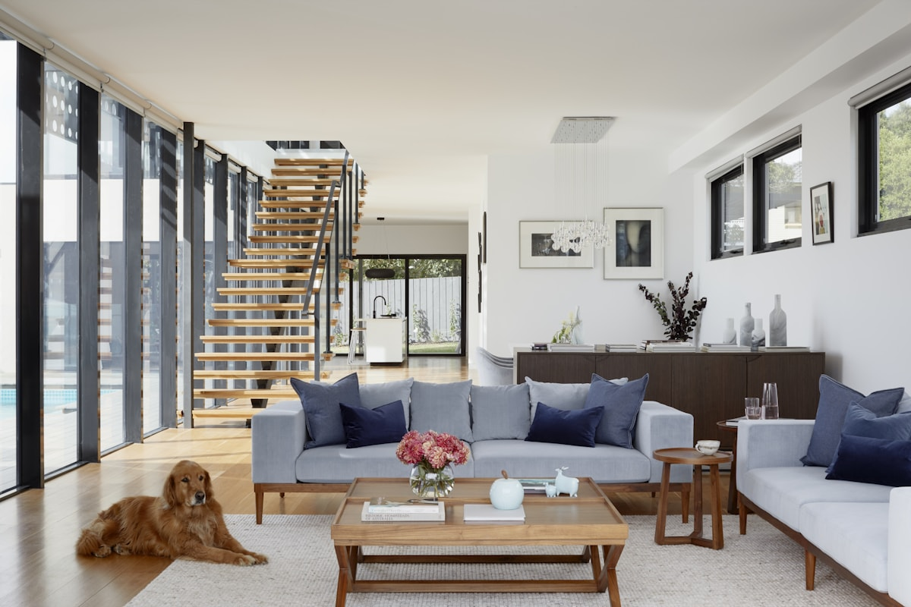
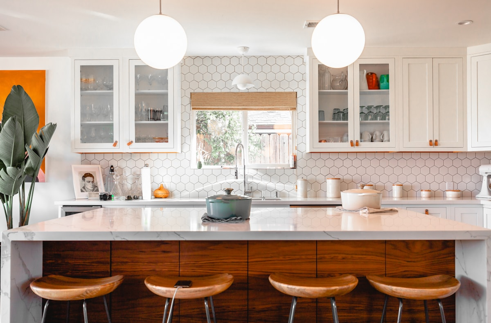
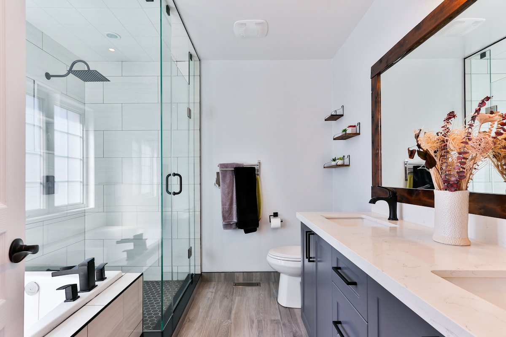
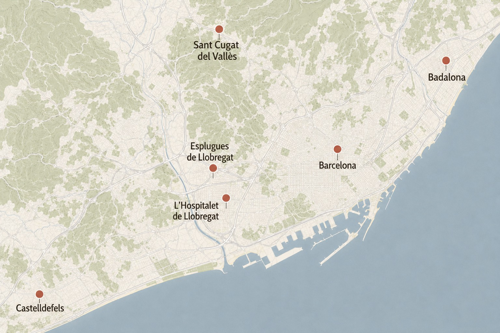

Reformas integrales
Renovacion completa de viviendas con coordinacion de gremios, calendario claro y seguimiento de cada fase de obra.

Reformas integrales en Barcelona
Reformas de pisos, cocinas y banos con planificacion clara, presupuesto detallado y seguimiento profesional.
Servicios
Planificamos cada intervencion segun el estado real del espacio, el presupuesto disponible y las necesidades de uso diario.
Renovacion completa de viviendas con coordinacion de gremios, calendario claro y seguimiento de cada fase de obra.

Rediseno de cocinas para mejorar distribucion, almacenaje, iluminacion y acabados sin perder coherencia con la vivienda.

Actualizacion de banos con soluciones practicas, materiales resistentes y una ejecucion pensada para el uso diario.

Seleccion de materiales, colores, carpinteria e iluminacion para dar unidad visual al proyecto final.
Proyectos
Cada vivienda exige decisiones diferentes. Estos ejemplos muestran como combinamos distribucion, materiales y funcionalidad.

Eixample, Barcelona
Redistribucion de un piso de 110 m2 para conectar cocina, comedor y salon, mejorar la entrada de luz y recuperar elementos originales.

Gracia, Barcelona
Nueva distribucion, almacenaje a medida y materiales resistentes para una cocina conectada con el comedor.

Sarria, Barcelona
Sustitucion de instalaciones, ducha a nivel de suelo y una seleccion de acabados faciles de mantener.
Proceso
Organizamos cada proyecto en cuatro etapas para que conozcas el alcance, los tiempos y las decisiones pendientes desde el inicio.
01
Revisamos la vivienda y tus necesidades.
Medimos las zonas clave del espacio.
Definimos contigo el punto de partida.
02
Definimos distribucion y materiales.
Detallamos presupuesto y calendario.
Entregamos una propuesta completa.
03
Coordinamos los oficios de la obra.
Supervisamos el avance y la calidad.
Mantenemos comunicacion continua.
04
Comprobamos contigo los acabados.
Resolvemos los detalles pendientes.
Entregamos la vivienda terminada.
Beneficios
Presupuesto detallado y sin sorpresas.
Sabes que se hace y por que.
Plazos realistas para cada fase.
Una planificacion clara y cuidada.
Profesionales coordinados y fiables.
Un interlocutor durante toda la obra.
Materiales de calidad y buen acabado.
Soluciones resistentes y duraderas.
Zonas de actuacion

Y alrededores
Preguntas frecuentes
Contacto